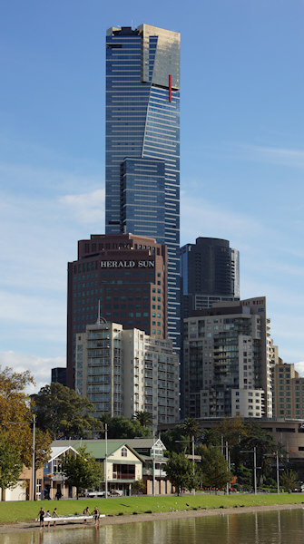
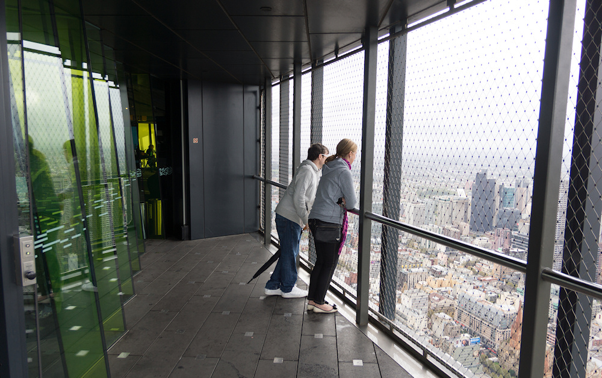
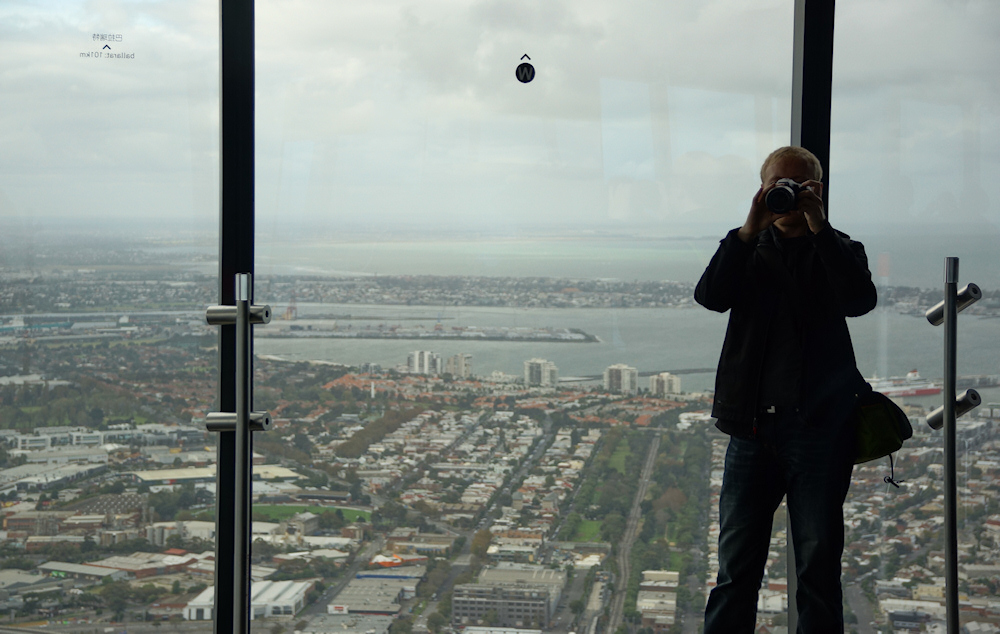
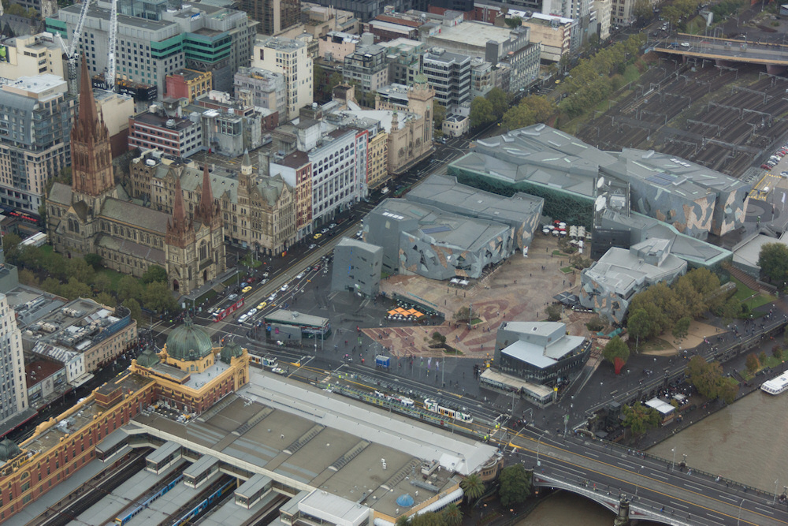
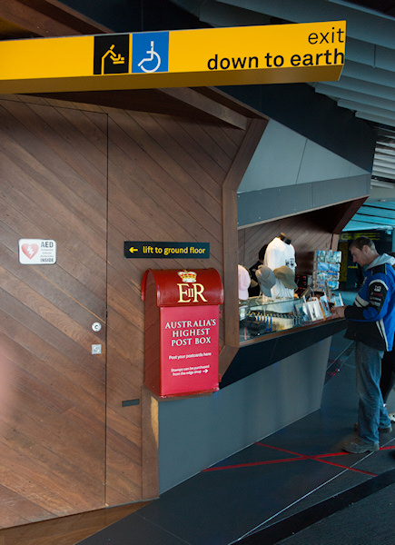
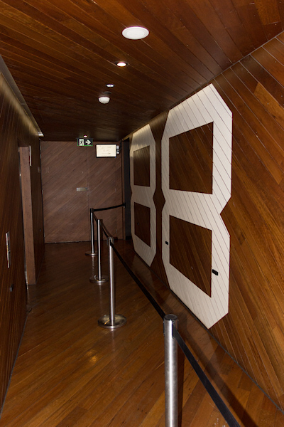
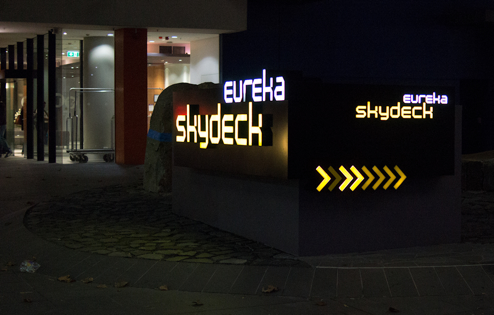
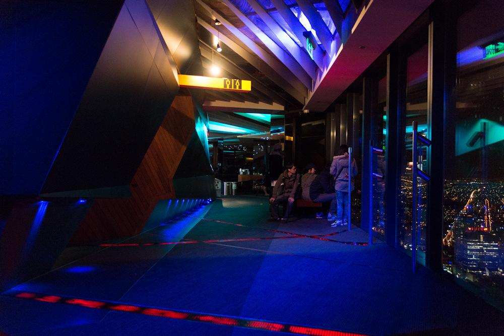
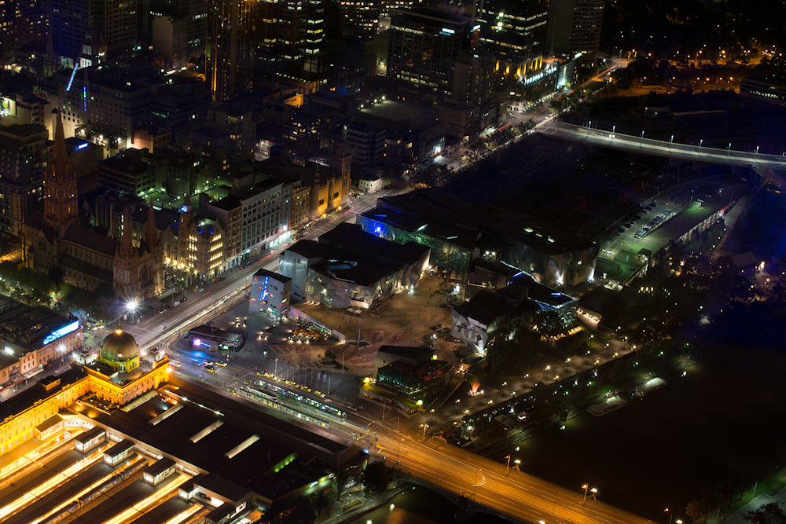

Melbourne von oben
Melbourne gilt als eine der Städte mit der höchsten Lebensqualität. Davon konnte ich mir vom Skydeck im 88. Stock des Eureka Towers einen guten Eindruck verschaffen. Der Wolkenkratzer erhebt sich als höchstes Gebäude der Stadt 297m über dem Yarra River. Gleich auf der gegenüberliegenden Flussseite im Norden liegt der Federation Square, eine Art modernes Forum für die Bewohner Melbournes. Hier finden Versammlungen, aber auch Veranstaltungen wie Feste und Konzerte statt. An drei Seiten eingeschlossen wird er von Museen und die Haupteinkaufsstraße ist ebenso wie Konzerthäuser und Theater schnell erreicht. Im Gegensatz zu den anderen Großstädten Australiens wirkt Melbournes CBD dadurch nachts nicht wie ausgestorben.
Im Osten liegt das Gelände des Melbourne & Olympic Parks, eine Sammlung von Sportstätten auf dem Gelände der Olympischen Spiele von 1956. Neben dem 100.000 Besucher fassenden MCG (Melbourne Cricket Ground), in dem hauptsächlich Australian-Football-Spiele ausgetragen werden (was für eine Verschwendung!) gibt es auch eine Fußballarena, eine geschlossene Halle (nicht nur) für Ballsportarten und vor allem die Tennis-Courts des ersten Grand-Slam-Turniers des Jahres, der Australian Open. Das Olympiastadion von 1956 wurde während meines Aufenthalts gerade abgerissen, um ein Olympic Park Oval genanntes Trainingsgelände mit Laufbahn für die Jogger der Stadt zu errichten.
Zurück am südlichen Ufer des Yarra Rivers liegt das Government House (der Amtssitz des Gouverneurs vom Bundesstaat Victoria) inmitten des Royal Botanic Garden. Weiter im Süden lädt die Port Phillip Bucht mit ihren Stränden zum Baden ein - wenn sich nicht gerade das Wetter herbstlich wie bei meinem Besuch zeigt. Im Westen schließlich sind die neugestalteten Docklands, das Melbourne Convention & Exhibition Centre und das Melbourne Aquarium zu sehen, welches in den Fluss hinein gebaut wurde.
Die Aussichtsetage des Eureka Towers selber ist mir mit zwiespältigen Eindrücken im Gedächtnis geblieben. Als Fotograph habe ich mich über die getönten Scheiben geärgert, die unter dem Ozonloch aber vermutlich sinnvoll sind, und dass ein engmaschiger Drahtkäfig die einzige Möglichkeit ist, ohne Glasfilter von oben auf die Stadt zu schauen. Und das auch nur in Richtung Westen. Dafür bietet das Skydeck aber viele Fernrohre in zwei verschiedenen Höhen (gut also für die kleineren Besucher) und den höchstgelegenen Briefkasten Australiens.
Nach Einbruch der Dunkelheit ist das Fotografieren noch einmal doppelt so schwer. Lichter in allen unmöglichen Farben und aus allen denkbaren Winkeln spiegeln sich in den Glasscheiben, so dass ich als Fazit nur sagen kann: Um einen Eindruck zu gewinnen, wie nah in der Stadt Melbourne alles Lebenswerte beeinander liegt, sollte man ruhig einen Blick von oben wagen - Fotografieren kann man aber besser auf Straßenlevel.
        